Mes projets
Veuillez sélectionner ce que vous souhaitez regarder avec la liste déroulante !
Application WEB sous serveur Python
Synopsis : Il s'agit d'une application WEB dont le but est d'injecter dans une base de donnée des données avec un formulaire html. Cette application sert à répertorier les anecdotes des gens grâce à ce formulaire.
But : Réaliser une application WEB sous serveur python avec Flask en 2 mois. Le projet a été réalisé en année de terminale dans le cadre de la matière "Numérique et Science de l'Informatique".
Compétences acquises
- Apprentissage du framework "Flask"
- Approfondissement du HTML CSS et Javascript
- Premier pas dans les bases MySQL
- Utilisation du langage python
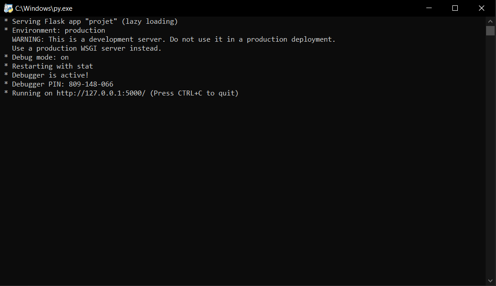
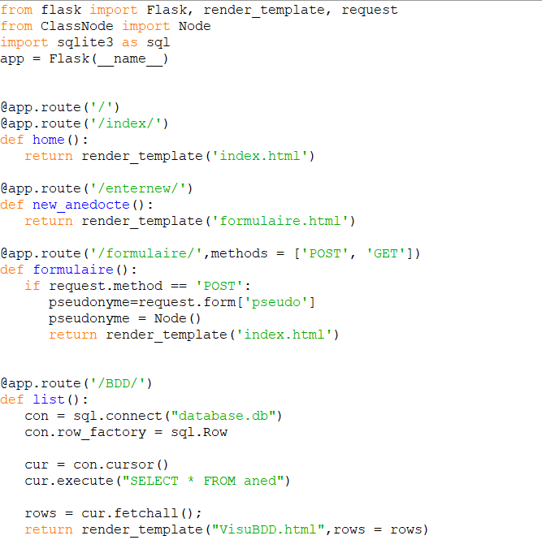
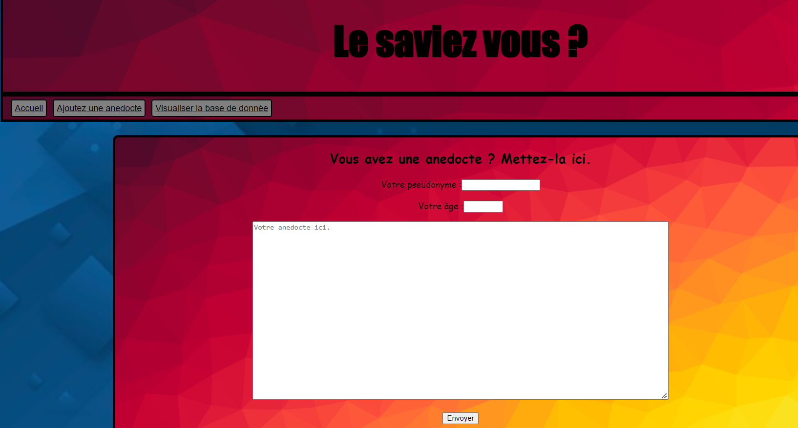
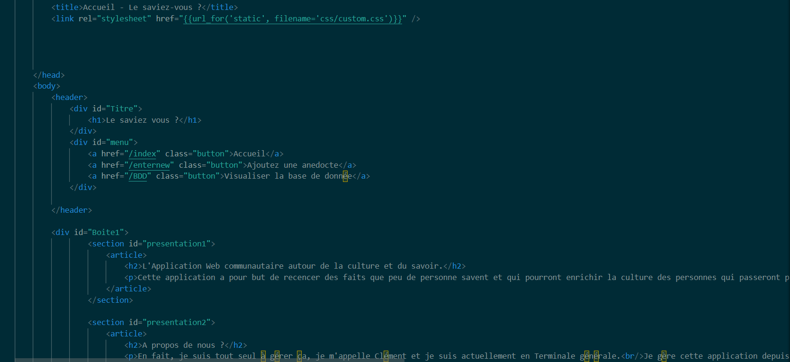
Création d'un site avec Bootstrap
Synopsis : Il s'agit d'un site web dont la contrainte était l'utilisation de Bootstrap. Ce projet devait être fait seul et devait être sur un thème de notre choix. Le site que j'ai conçu est un site de promotion de jeu de rôle.
But : Réaliser un site web en utilisant bootstrap et en le mettant sur un serveur pour y accéder à distance..
Compétences acquises
-
- Approfondissement du HTML CSS et Javascript
- Apprentissage et maîtrise du framework "Bootstrap"
- Mise en place d'un serveur d'hébergement et mise en place d'une connexion à distance pour le site.


Mise en place d'une application WEB de note de frais
Synopsis : Il s'agit d'une application hébergé sur un site web dont le but est de pouvoir créer, valider et vérifier des notes de frais dans une base de donnéee.
But : Réaliser une application WEB complète avec une base de donnée créée au préalable, l'activité est divisé en deux.
Compétences acquises
-
- Approfondissement du HTML CSS et Javascript
- Apprentissage et maîtrise du framework "Bootstrap"
- Utilisation des requêtes SQL dans du code PHP
- Utilisation du langage PHP pour se connecter à une base de donnée.
- Création d'une base de donnée contenant toutes les informations nécessaires pour être utiliser.
- Mise en place d'un système de sécurité pour veiller à la protection de l'application.
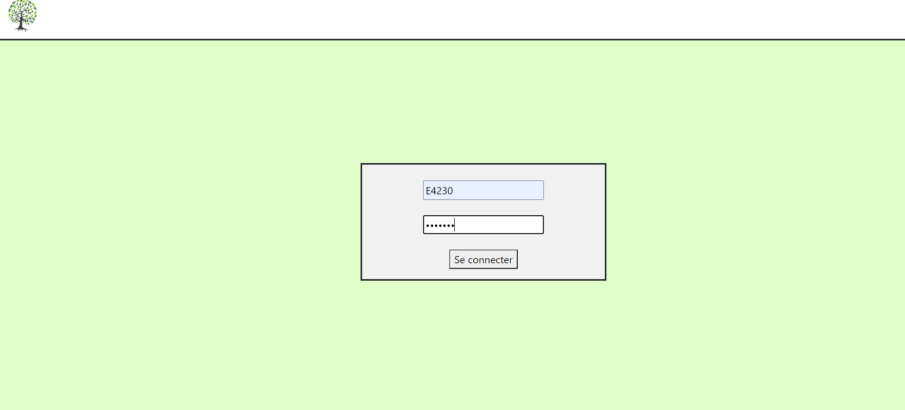
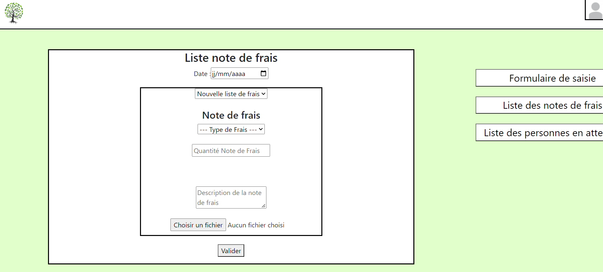
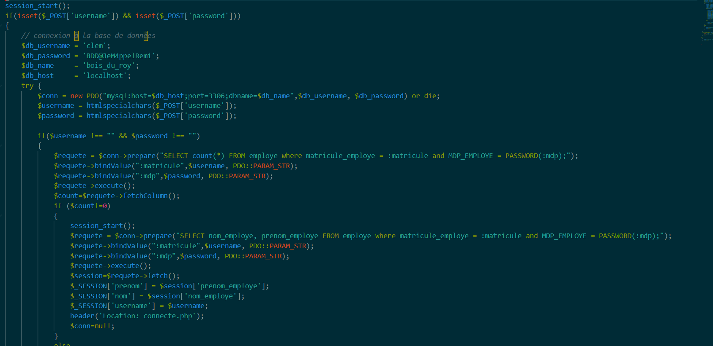
Quelques documentations
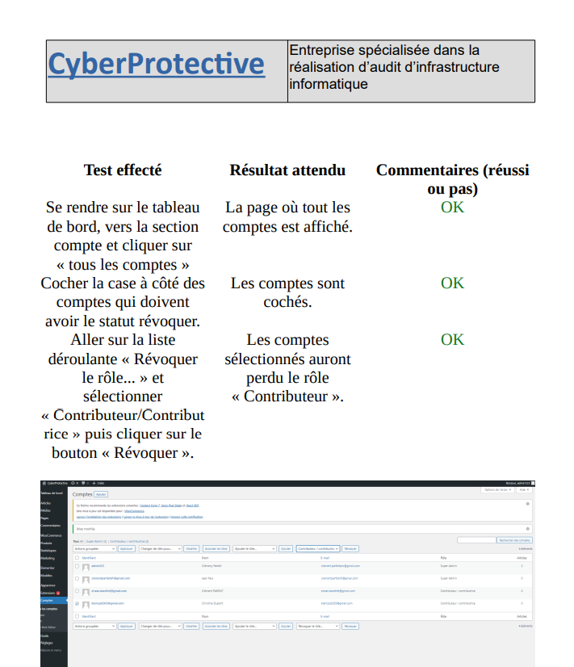
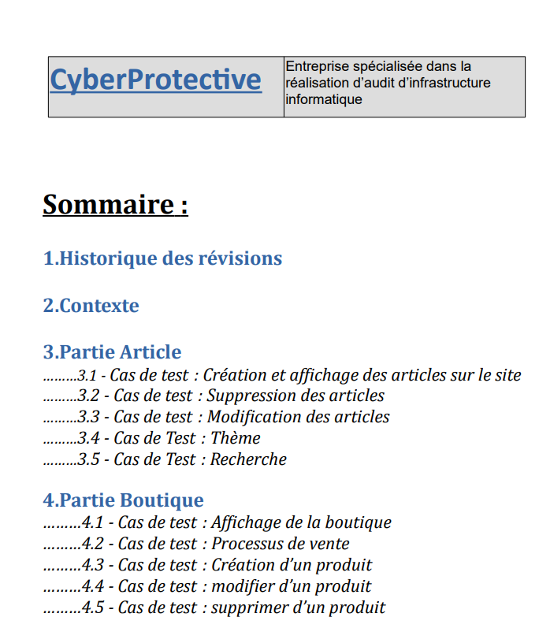
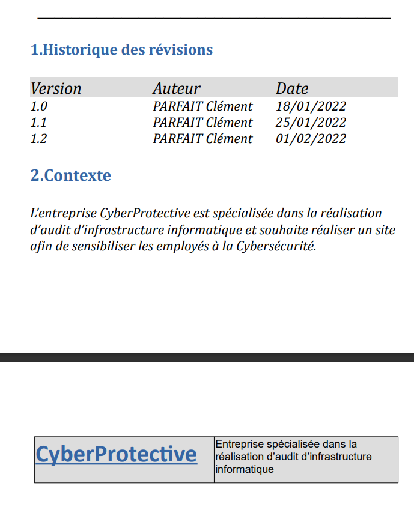
Le Jeu du Pendu
Synopsis : A l'aide du langage C#, réaliser un jeu du pendu étape par étape.
But : Réaliser un projet en C# en utilisant le langage et le principe de programmation orienté objet.
Compétences acquises
-
- Connaissance du langage C#
- Utilisation et apprentissage de la programmation orienté objet.
- Utilisation des classes.


Mes projets en gestion de base de donnée
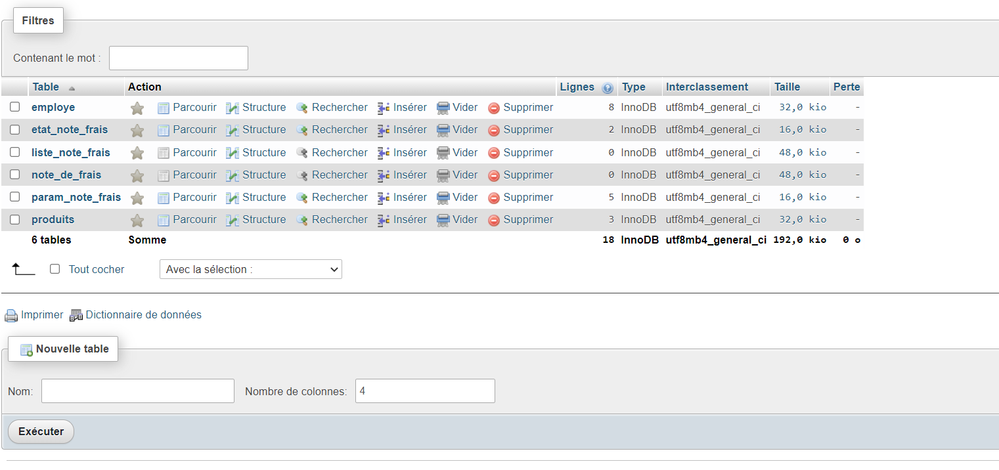
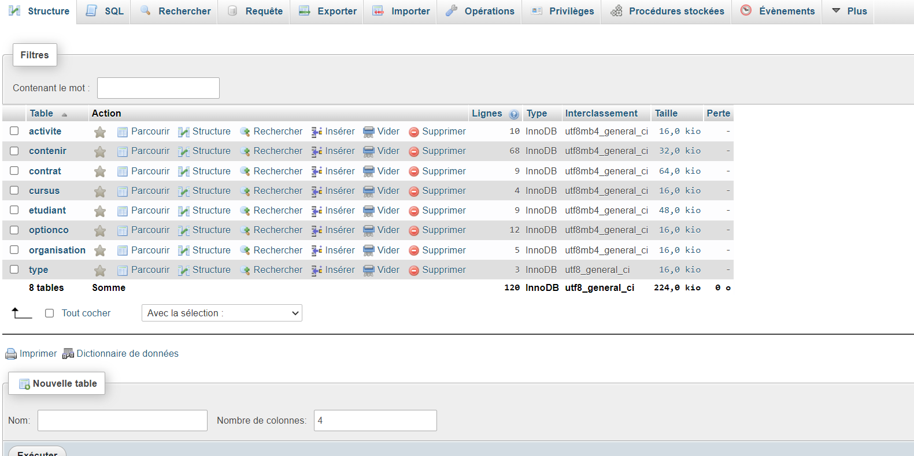
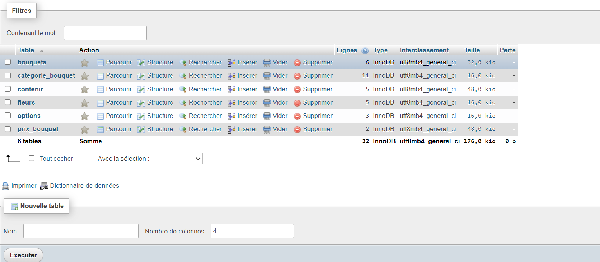
Site Wordpress
Synopsis : En utilisant Wordpress, réaliser un site traitant du thème de la Cybersécurité.
But : Réaliser un site en utilisant seulement Wordpress, quelques extensions et un thème.
Compétences acquises
-
- Apprentisssage de Wordpress
- Approfondissement dess connaissances de Cybersécurité en répertoriant des articles dans le site.
- Utilisation des bases de donnée dans le cadre d'une boutique
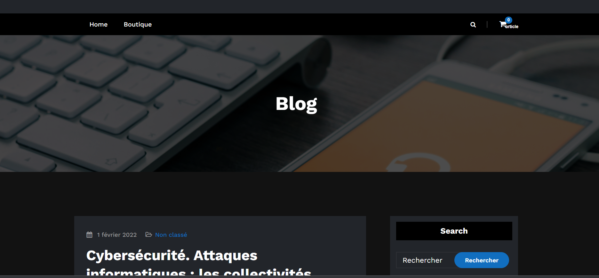
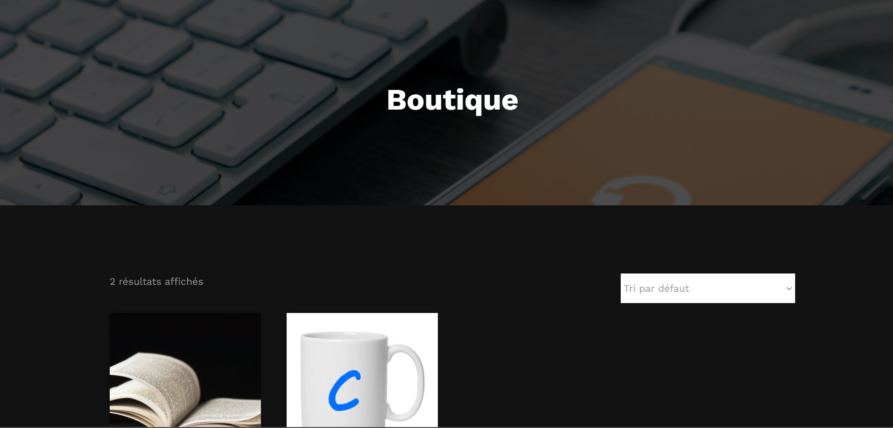